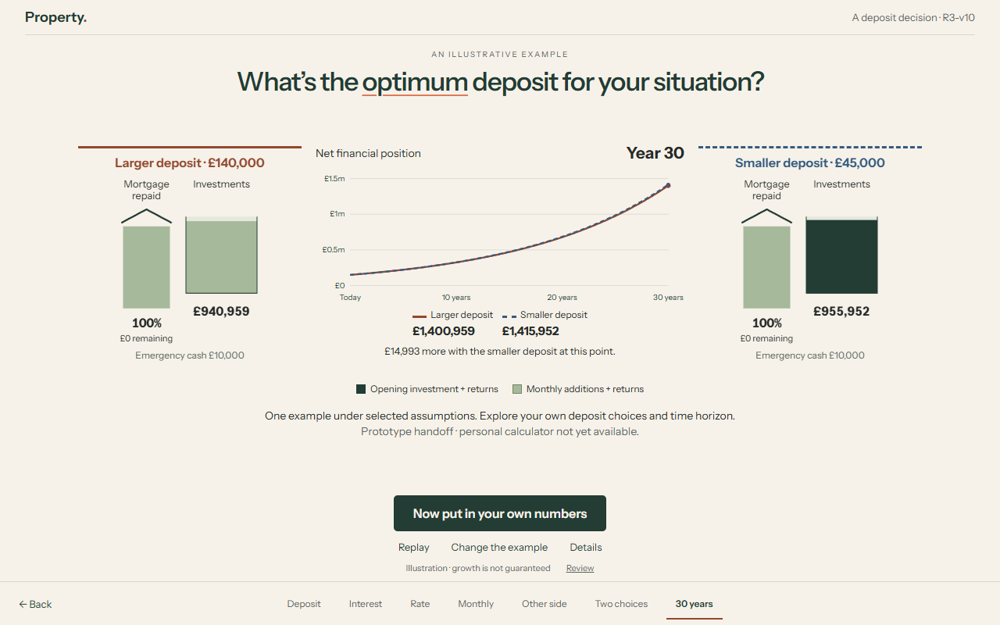

PROPERTY OPTIMISER · M8 · R3-v10
What is the optimum amount to put towards the deposit?
Two allocations of the same starting resources, introduced separately and then animated together against one net-financial-position graph.
Open the interactive experience →
New source draft PR · Publication identities · Verification summary · Preserved R3-v9 review
What changed
The house remains directly draggable, with £1 keyboard and exact entry. The three larger-deposit benefits retain connected interest and a two-band rate staircase. Available monthly money is introduced before contributions. Two scenarios now share continuous investment pots, one five-second clock and one graph including mortgage debt. The completed comparison stays visible at the ending.
The graph uses an honest common axis. Scenario identity (solid rust / dashed blue) is separate from investment cohorts (dark opening investment / light monthly additions, each including returns). Pots use a fixed £1m capacity from setup through the ending. At the smallest 320×568 viewport the primary action stays visible while the document can scroll; enlarged text stacks cards. There is no internal scene scroller.

Uncut, normal-speed journeys
Local compiled build, real scripted mouse/touch interaction, reading pauses, both scenario introductions, simultaneous playback and the final prototype handoff. No editing, cuts or speed changes. The phone is browser emulation.
Desktop · 1280×800
Phone-sized · 390×844
Source, assets and timing · Full 1× playback verification · Agent inspection scope
Independently checked illustration
£450,000 house; £150,000 after-cost cash including £10,000 reserve. Larger deposit £140,000: £310,000 mortgage at 5.5%, no opening investment. Smaller deposit £45,000: £405,000 mortgage at 6%, £95,000 opening investment. Both commit the exact smaller-mortgage payment, displayed as £2,428.18 monthly. Larger repayment £1,760.15; the unrounded £668.03 difference is invested at month end. Smaller regular additions are zero.
Both start at £150,000 net. Year 30: £1,400,959.29 for the larger deposit and £1,415,952.40 for the smaller, a £14,993.11 difference. The smaller stays ahead at every positive monthly date; no crossover is manufactured. Net position is house value + cash + investments − mortgage remaining.
These are fictional fixed mortgage rates and constant 8% annual-effective investment growth, with zero cash return and unchanged house value. No tax, inflation, fees, refinancing, overpayments or purchase-cost differences. It is not a forecast, guarantee or optimum. Exact figures and method are in Details. Production-engine behaviour is unchanged.
Calculator limitation
There is no supported personal-calculator input route on this branch. “Now put in your own numbers” opens an explicit prototype availability dialog; it collects no personal inputs and retains the result. The end-to-end personal-calculation journey is not complete.
Verification actually run
- 7 Python tests with independent 100-digit all-month references, conserved opening allocations, threshold triples, equal funding, contribution timing, final repayment, net position and fixed-rate Details.
- 3 JS input/timing/rounding tests; 8 complete worker/CPython payload matches.
- 72 viewport/scene cases; normal/reduced motion, touch, keyboard, exact £1 input, pause/resume, replay/navigation and optional manual-choice restoration.
- 15 enlarged-text checks and accessible Details. Desktop/phone frame sampling checks collisions, clipping and matching scenario months; pot scale remains fixed.
- Backend: 4,730 passed, no skips, two optional PyYAML warnings, 291.13s. Ruff and strict mypy on 53 sources passed.
- Fresh independent review reproduced four defects; all four fixes were independently verified.
These are local results. Pages deployment and hosted source CI are separately identified in the publication record. No hosted CI pass is inferred from local checks.
Comprehension questions
Novice testing remains unperformed. Ask without prompting and record misunderstandings before explaining:
- Why do both scenarios start at the same net financial position?
- Where does the monthly investment money come from?
- Why does the smaller-deposit example have no monthly additions?
- What do the investment shades mean?
- What does the graph include?
- Does this example establish the optimum deposit for the viewer?
Review status
Awaiting owner visual feedback. No R4 and no main merge. Physical-device, novice-comprehension, Firefox/Safari and spoken screen-reader testing remain unperformed. Technical verification and agent inspection do not establish owner acceptance.
Tested source afcf1b3a0729faa7a1273bdcdfb159dec1bf8e9a; recorded application ae1ca65f61e81984ba3260f659aa9f4067839e52.